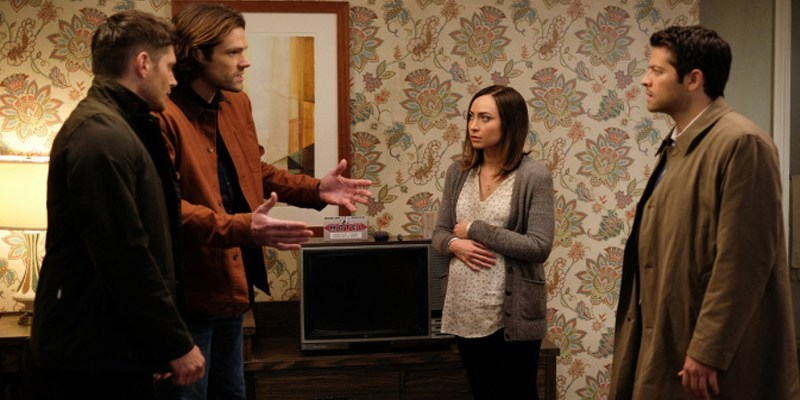

Temporada 12
Dean, Castiel e Mary tem uma pista sobre Sam e partem para resgatá-lo. Dean fica desconfortável por Mary entrar numa zona de perigo, mas ela insiste em ir junto. Enquanto isso, Crowley é avisado que Lúcifer tomou conta do corpo de um rock star chamado Vince Vicente. Lucifer percebe que sendo o rock star Vince Vincente, ele pode obter seus fãs para fazer o que quiser. Emocionado com este poder, Lúcifer organiza um concerto VIP em segredo, a fim de matar todos eles. Sam, Dean e Castiel entram no ventre da indústria da música para tentar pará-lo.
A busca de Lúcifer por um receptáculo com poder e influência o coloca na Casa Branca. O presidente dos Estados Unidos, sem saber, faz um acordo com o diabo, levando Sam, Dean, Castiel, Crowley e Rowena a se juntarem para lutar contra o Senhor das Trevas. Depois de serem presos pela tentativa de assassinato do presidente dos Estados Unidos, Sam e Dean devem encontrar uma saída de um centro de detenção subterrâneo administrado pelo governo no meio do nada. Determinada a encontrar seus filhos, Mary e Castiel procuram ajuda de uma fonte improvável. Lucifer, ainda no corpo do presidente, pretende ter um filho, um nefilim, com o objetivo de ter uma arma e Kelly Kline se torna a mãe desse poderoso ser. Ainda grávida do bebê do Lúcifer, ela se refugia com um demônio depois que um anjo tenta matá-la.
Sam e Dean conseguem encontrar o paradeiro de Kelly Kline. Mick inesperadamente aparece no bunker e decide se juntar à caçada. Sam encontra uma maneira de parar o bebê do Lucifer, mas Castiel tem outra coisa em mente para Kelly. Dean fica furioso quando descobre que alguém roubou o Colt. Kelly toma uma decisão ousada sobre o futuro de seu bebê. Lúcifer batalha contra Sam, Dean e Castiel pelo controle de seu filho que está por vir.
